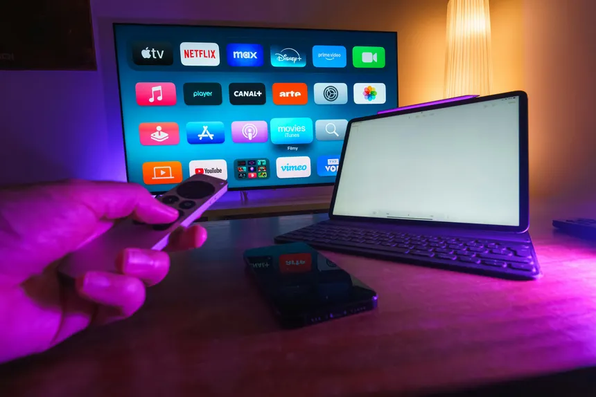

As novas temporadas e séries que estão dominando as plataformas
Confira o catálogo das novidades que chegam à Netflix, Prime Video, Max, Disney+ e Apple TV+ nesta temporada.

A disputa pela atenção dos espectadores nos serviços de streaming continua intensa. Na Netflix, a segunda temporada de Magnatas do Crime e produções derivadas do universo de suspense figuram no topo das maratonas.
Na Max / HBO, a exibição dos novos episódios da superprodução da DC Lanternas vem movimentando as redes sociais com discussões sobre o enredo de mistério. Na Apple TV+, o suspense de espionagem Slow Horses chega à sua 6ª temporada aclamada pela crítica.
Já no catálogo da Prime Video, os destaques ficam com a 7ª temporada da série policial O Novato e novos dramas românticos originais, ideais para quem busca uma boa maratona no final de semana.
Voltar para Entretenimento